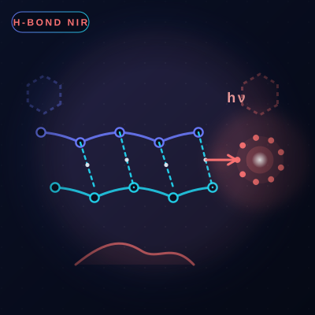
NAT. CHEM.2027
Dr. Zuping Xiong is currently a recipient of the RGC Junior Research Fellow Scheme (JRFS) at The Hong Kong University of Science and Technology (HKUST). He was invited to serve as an Editorial Board Member of Scientific Reports and Discover Chemistry (Springer Nature), 2026–Present.
He received his Ph.D. degree from Zhejiang University ahead of schedule, under the supervision of Prof. Ben Zhong Tang, Prof. Haoke Zhang and Prof. Jing Zhi Sun, with interdisciplinary supervision by Dr. Jun Qian. In 2022, he joined Prof. Tang's group (admitted with first rank) and began research on aggregation-induced emission (AIE).
He has authored 51 research articles, with 29 papers as first or corresponding author in Nat. Chem., Nat. Rev. Chem., J. Am. Chem. Soc. (×2), Chem (×2), Nat. Commun., Angew. Chem. Int. Ed. (×3), ACS Materials Lett., CCS Chem., Chem. Sci. and related journals.
He has delivered more than 11 oral / invited presentations at international and national conferences and received the Best Oral Presentation award.
From the photophysics of aggregates to excited-state computational chemistry — understanding how light, electrons and space interact in molecular systems.
Aggregation-induced emission (AIE), clusteroluminescence, and luminescent polymer systems for optoelectronic applications.
Excited-state dynamics, through-space interactions, and structure–property relationships of emissive aggregates.
Photofluorochromic switches, photochromism, and light-driven molecular transformations.
Femtosecond transient absorption, steady-state and time-resolved spectroscopy to unveil aggregate photophysics.
Excited-state dynamics, high-pressure simulations, and virtual screening for functional emitters.
Exploring the boundaries of covalency, lone-pair interactions, and beyond-conjugation electronic effects.
~50 research articles · 29 as first or corresponding author in Nat. Chem., JACS, Angew. Chem., Chem, Nat. Commun. and more.

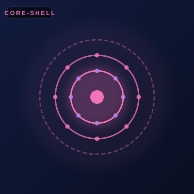
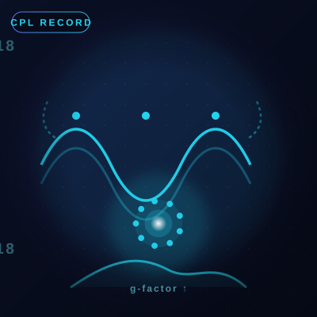
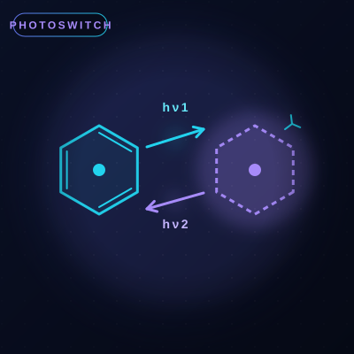
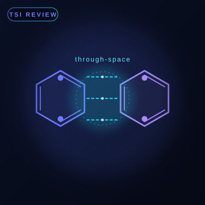
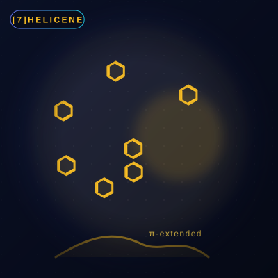
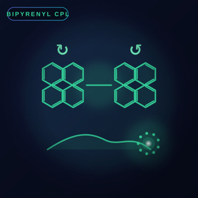
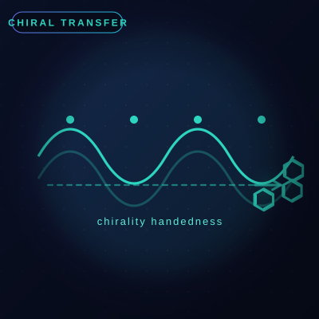
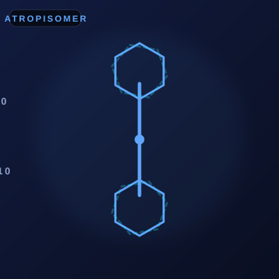
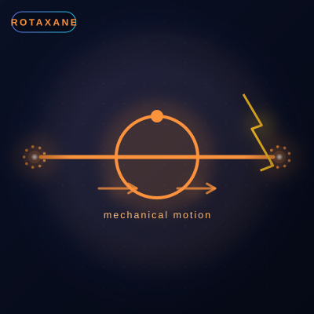
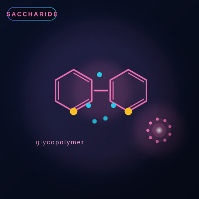
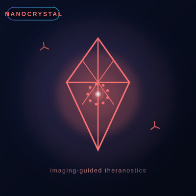
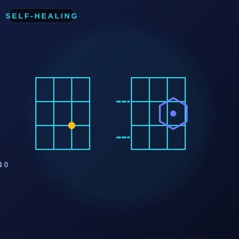
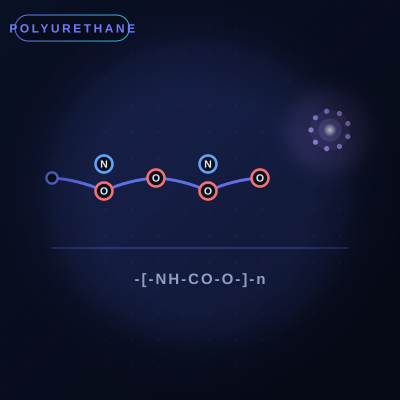

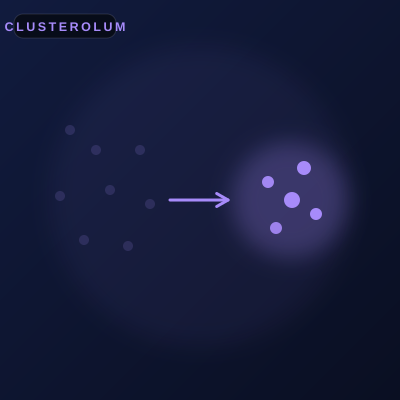
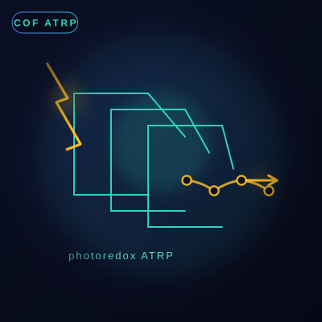
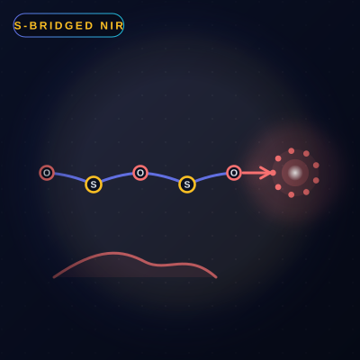
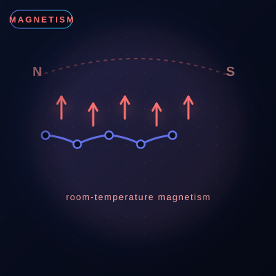
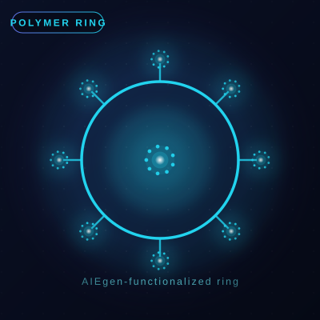
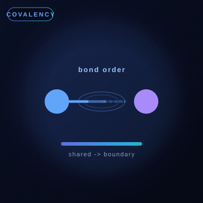
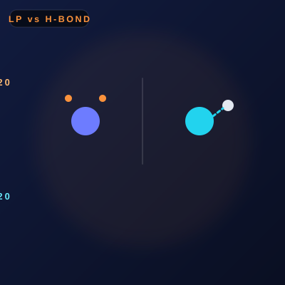

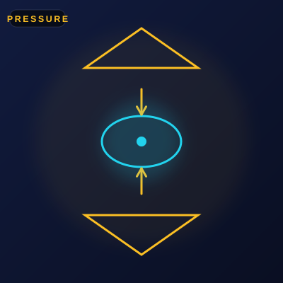
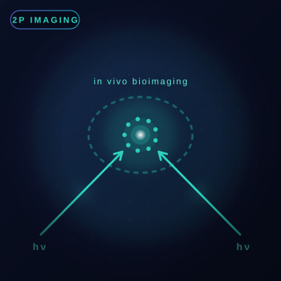
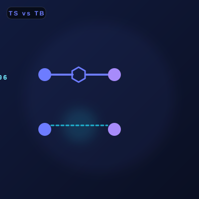
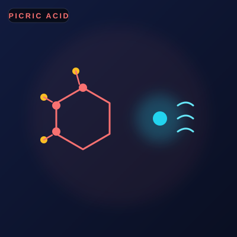
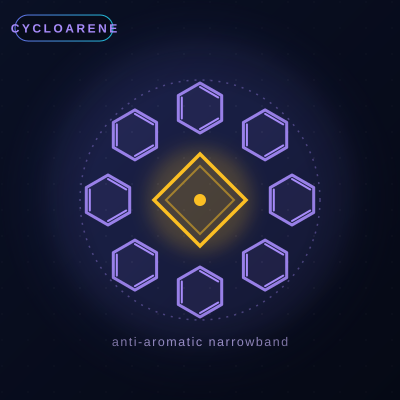
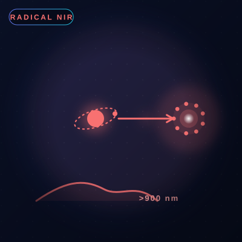
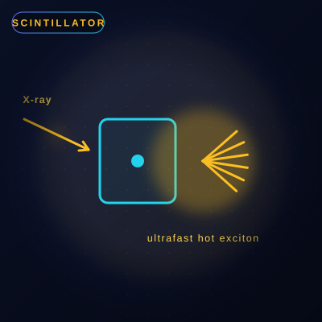
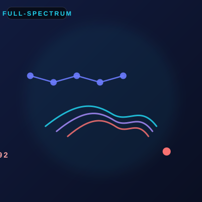
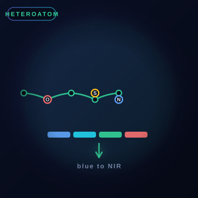

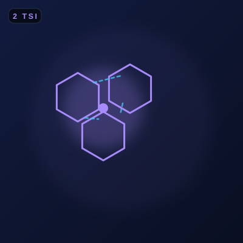
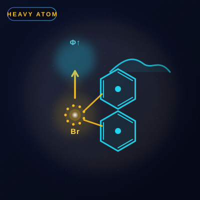
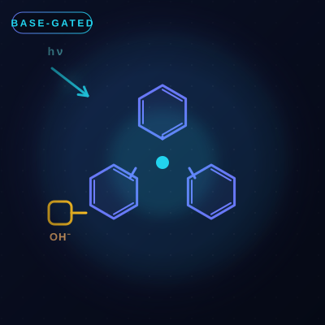
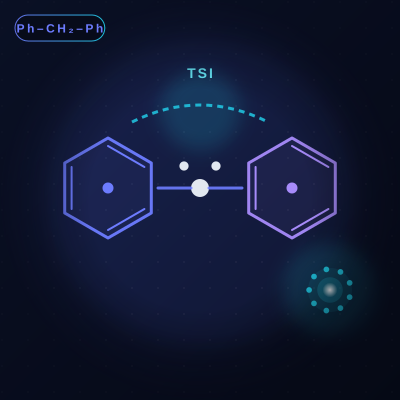
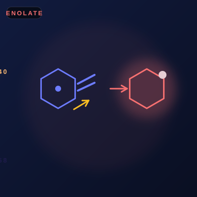
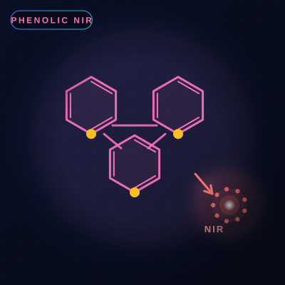
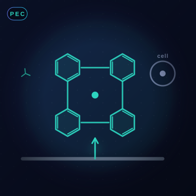
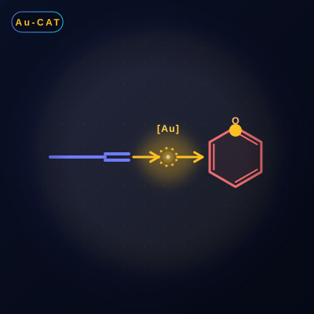
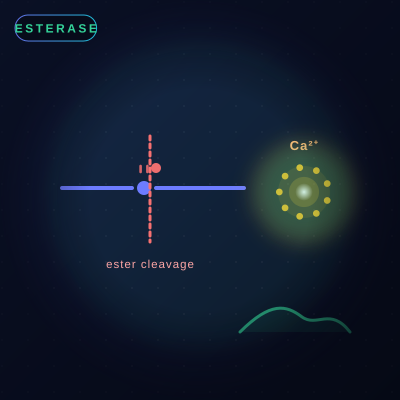
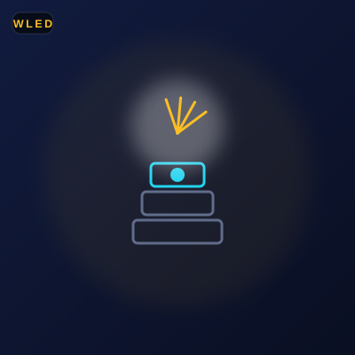
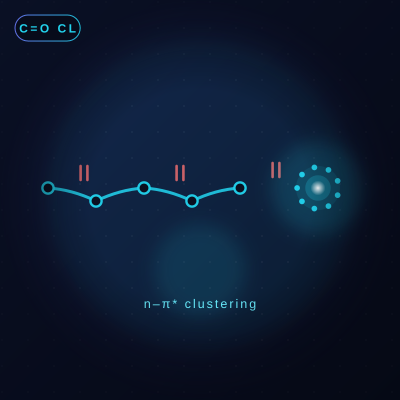
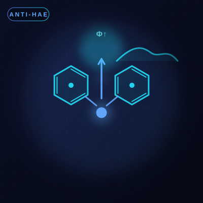
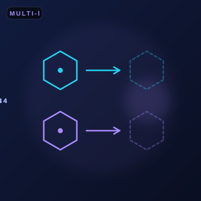
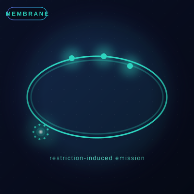
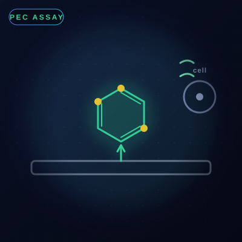
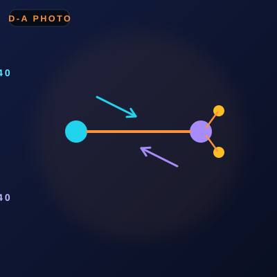
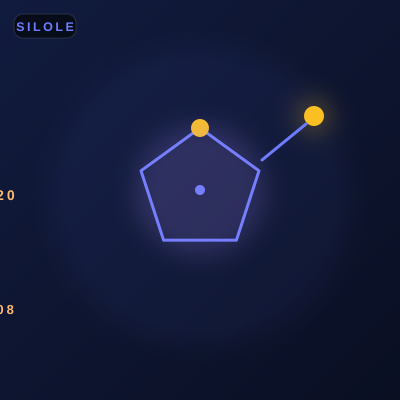
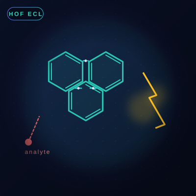
74th Lindau Nobel Laureate Meetings · Lindau, Germany
NSFC PhD Student Research Project (Leader) · Fundamental Research Funds for the Central Universities (Leader)
International and national conferences · Best Oral Presentation Award
One of 10 worldwide · Royal Society of Chemistry
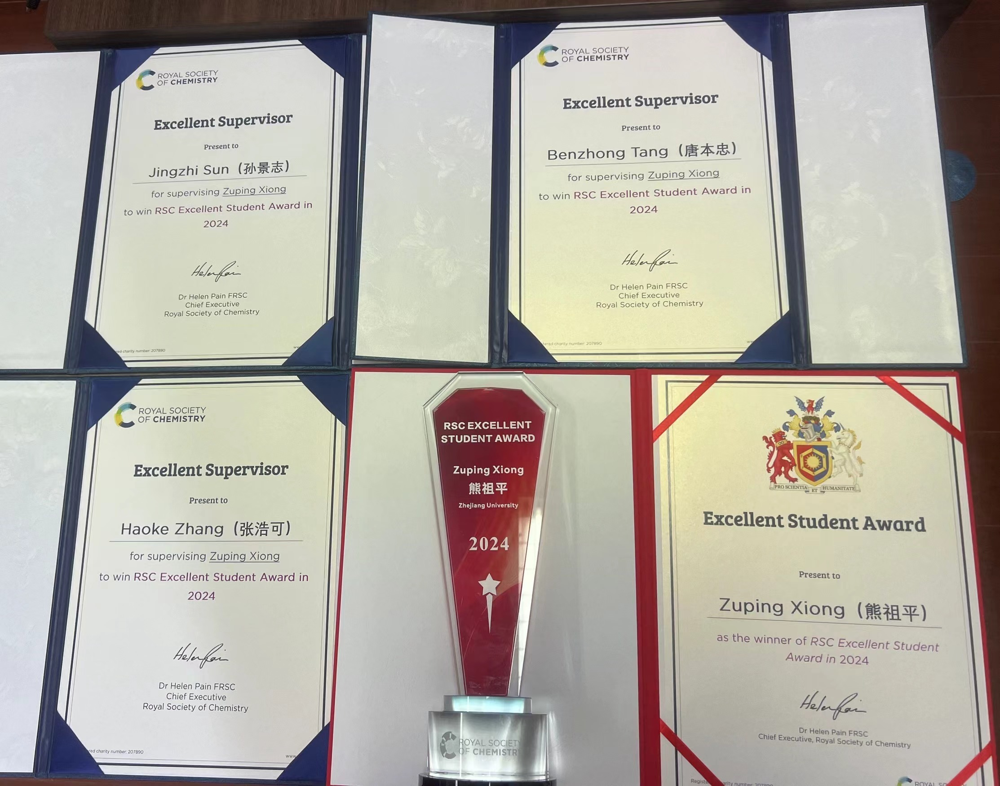
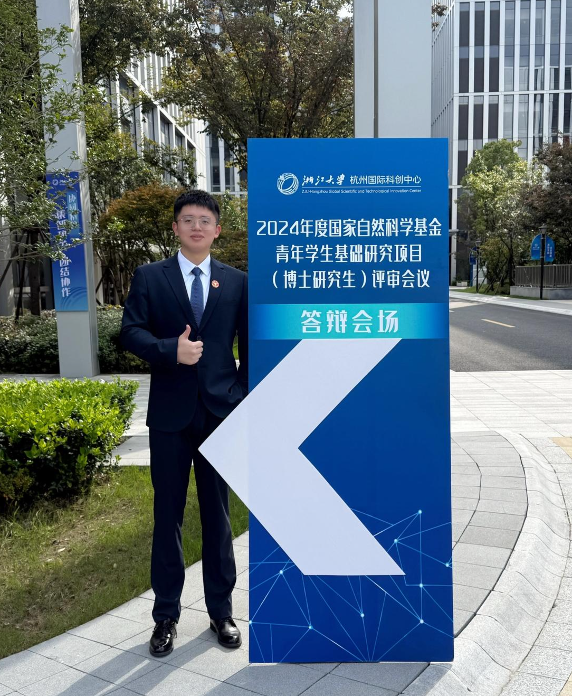

"Life is nothing but an electron looking for a place to rest." — some memorable moments along the way.
Welcome to collaborate — feel free to reach out for academic exchange or cooperation.
Submitting opens your email client with the message addressed to xiongzuping@ust.hk.